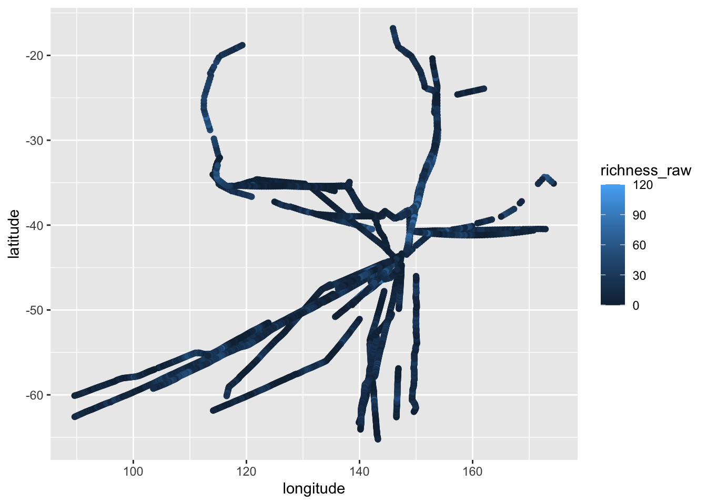
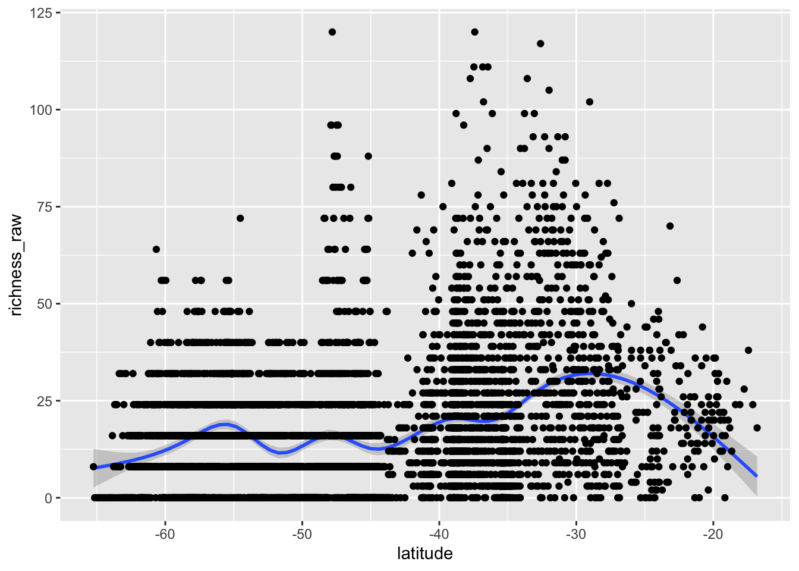
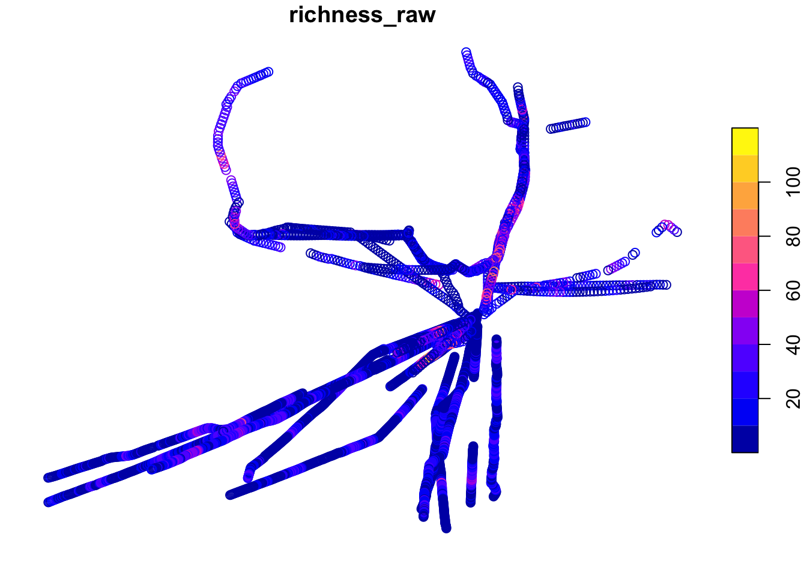
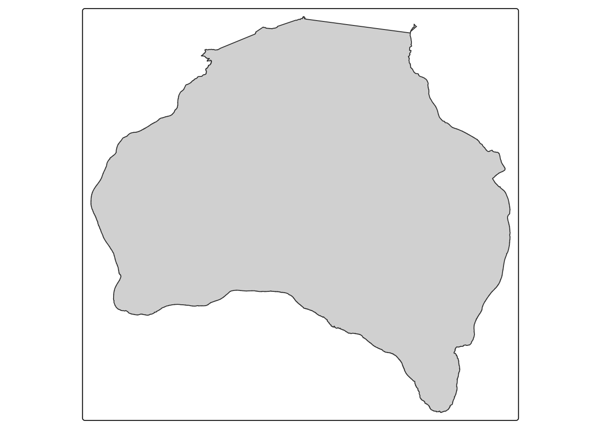
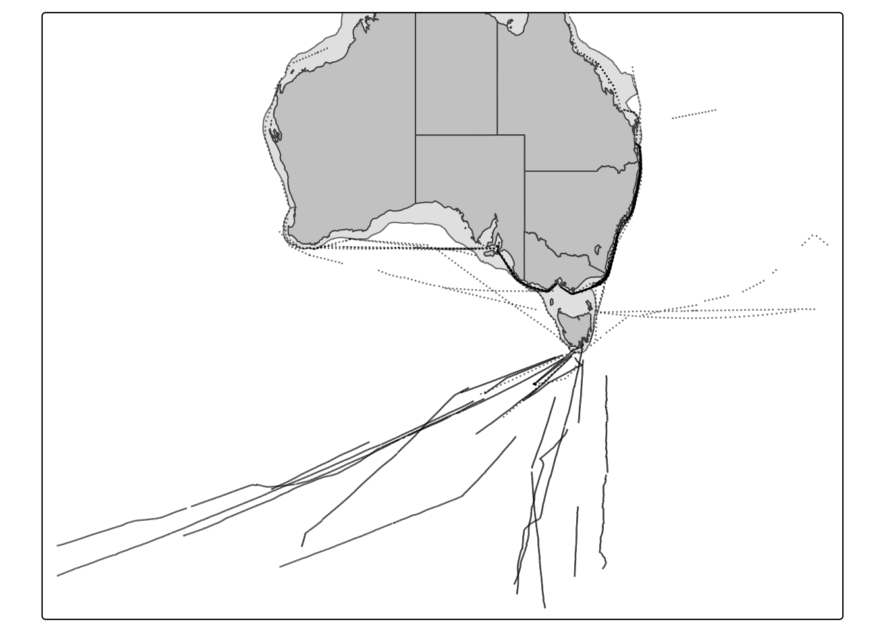

Code
# Load the copepod data
dat <- read_csv("../data/workshop4/copepods_raw.csv")
datSpatial data in R
This workshop explored how R can be used to visualise and work with spatial data. Using a dataset of copepod species richness, I practised plotting geographic coordinates, working with coordinate reference systems, and creating maps using the sf and tmap packages. These packages allow spatial data to be displayed and customised in R.
# Load the copepod data
dat <- read_csv("../data/workshop4/copepods_raw.csv")
datThe copepod dataset was explored using ggplot2. By plotting longitude against latitude and colouring the points according to species richness, the sample locations and richness variations between locations could be visualised. This provided an initial overview of the spatial distribution of the data.
ggplot(dat) +
aes(x = longitude, y = latitude, colour = richness_raw) +
geom_point()
Although this plot shows the geographic locations of the samples, it is still a scatter plot rather than a properly projected map. However, it provides a useful starting point for exploring spatial patterns before using more specialised mapping tools.
suppressMessages(
ggplot(dat, aes(x = latitude, y = richness_raw)) +
stat_smooth() +
geom_point()
)
The relationship between latitude and species richness was explored using a scatter plot with a smoothed trend line. This allowed identification of potential patterns in richness across different latitudes , as well as any unusual variation in the data. Examining the data this way is useful before moving on to more detailed spatial visualisations.
sdat <- st_as_sf(dat, coords = c("longitude", "latitude"),
crs = 4326)
crs4326 <- st_crs(4326)
crs4326 # Look at the whole coordinate reference system
crs4326$Name # Pull out just the name of the CRSTo work with the data spatially, the original dataframe was converted into a simple features (sf) object using the longitude and latitude coordinates. The WGS84 coordinate reference system was used, allowing the points to be assigned geographic locations. This is an important step when creating maps, as it ensures the coordinates are interpreted correctly.
plot(sdat["richness_raw"])
Using the sf package, a basic map was created showing the spatial distribution of copepod species richness. This was a simple way to visualise the data using its geographic coordinates. tmap was then explored, which provides more options for customising map colours, symbols and layouts.
# Using tmap
tm1 <- tm_shape(sdat) +
tm_dots(
fill = "richness_raw",
fill.scale = tm_scale_continuous(values = "plasma"),
fill.legend = tm_legend(title = "Species richness"),
size = 0.6,
col = "black",
lwd = 0.3
) +
tm_title("Species Richness") +
tm_layout(
frame = FALSE,
legend.outside = TRUE
)
# Loading shapefiles
aus <- st_read("../data/workshop4/spatial-data/Aussie/Aussie.shp")
aus
shelf <- st_read("../data/workshop4/spatial-data/aus_shelf/aus_shelf.shp")
shelfTo provide geographic context for the copepod data, additional spatial layers were used, i.e., shapefiles of Australia and its continental shelf.
# Mapping polygons
tm_shape(shelf) +
tm_polygons()
tm_shape(shelf, bbox = sdat) +
tm_borders(
fill = "grey90",
col = "grey50",
lwd = 1,
lty = "dashed"
) +
tm_shape(aus) +
tm_polygons(
fill = "grey80",
col = "grey30",
lwd = 1
) +
tm_shape(sdat) +
tm_dots(
size = 0.02,
col = NA
)
I opted to keep the colours relatively plain and greyscale, as I feel this looks more professional and is easier on the eye. The map still conveys the information effectively without unnecessary visual distractions. However, if the map were to include more data, I might consider using additional colours or visual elements to distinguish between different features and improve readability.